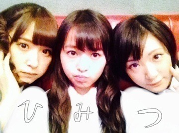
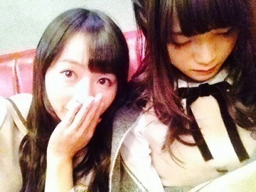
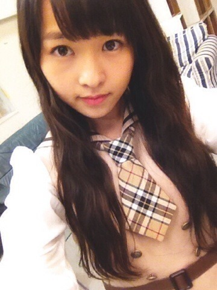
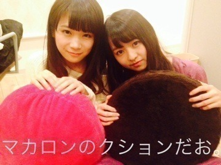

| 2013/10 18 Fri | 酸味の少ないピクル ス。507回目 |
あみ19歳！
お誕生日おめでとう！
あみの肩すきなのー
がしつわるいがぞういっぱーい

ひみつ

カフェでまたーりかな。

まいまい寝る。

新制服解禁。
茶色でお上品な感じです。
学生組はネクタイ
お姉さん組は丸襟リボン
自分的には丸襟リボンがすごいすき！
どっちもかわいい。
どうでしょう。
一言更新でしたー
まりか
と思いきやのまたまだ
続いちゃうよ〜(｀･ω･´)ノ
もう少しお付き合いくださいっ♪
昨日はね、ある撮影をして
来たんだけどまなったんが
たくさん構ってくれて
嬉しかったんだ〜( ^^ )/♡
まなったんの携帯の待ち受け画面は
今万理華との2ショットのちゅーって
顔をしてるやつらしいよ(｡•̀◡-)✧
まなったんと万理華はいつも
どっちのほうが丸顔か
言い合ってるんだけどみなさんは
どっちの方が丸顔だと
思いますか？？(°0°)
じゃ、今日もぐっすり
眠れますよーに〜♪

コメント(458)
2013/10/18 23:42